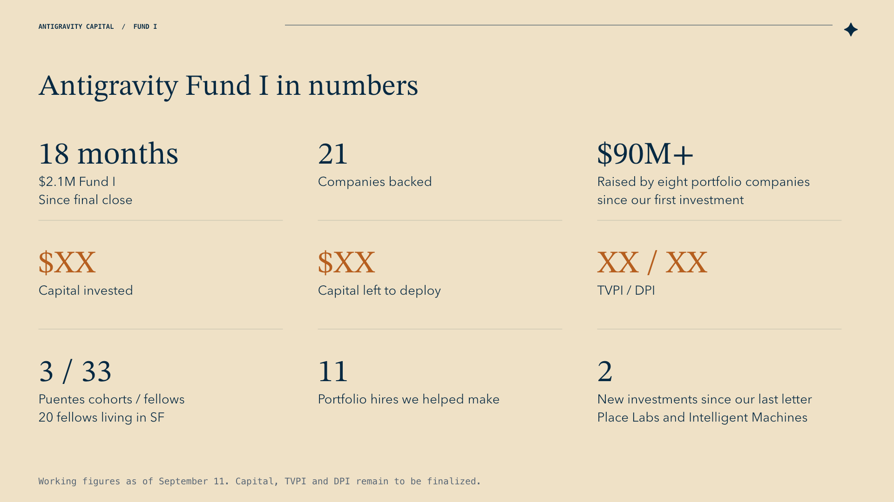
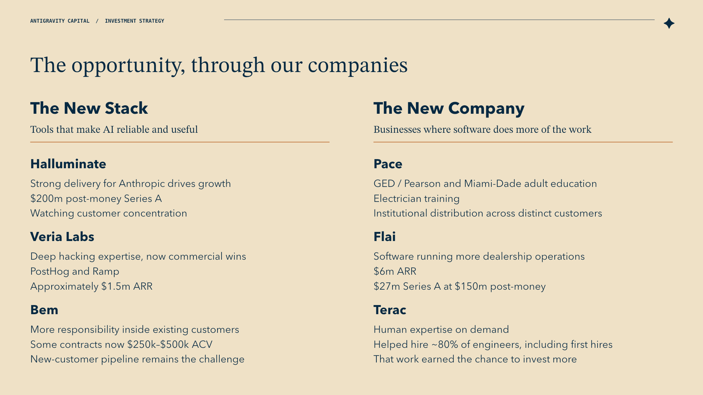
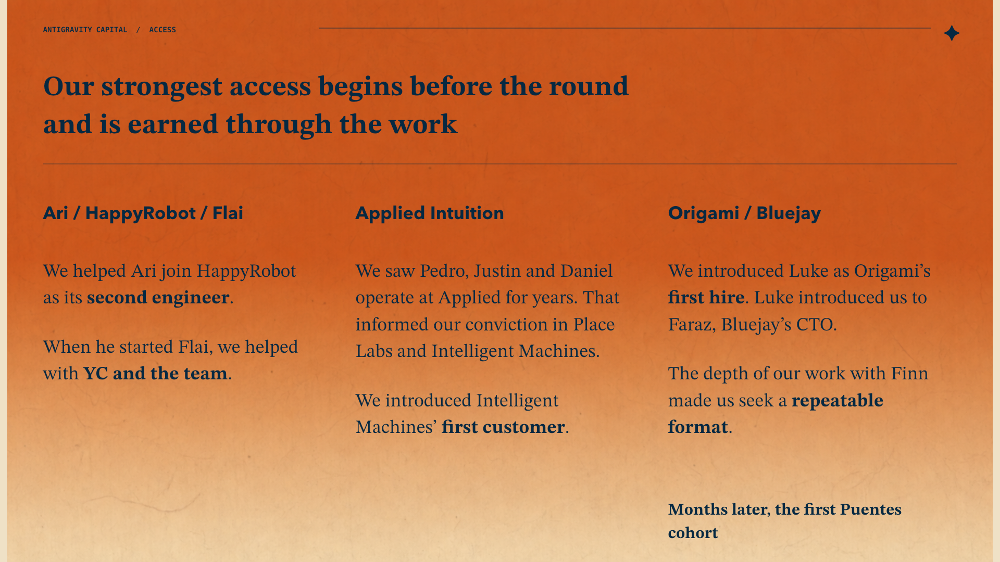
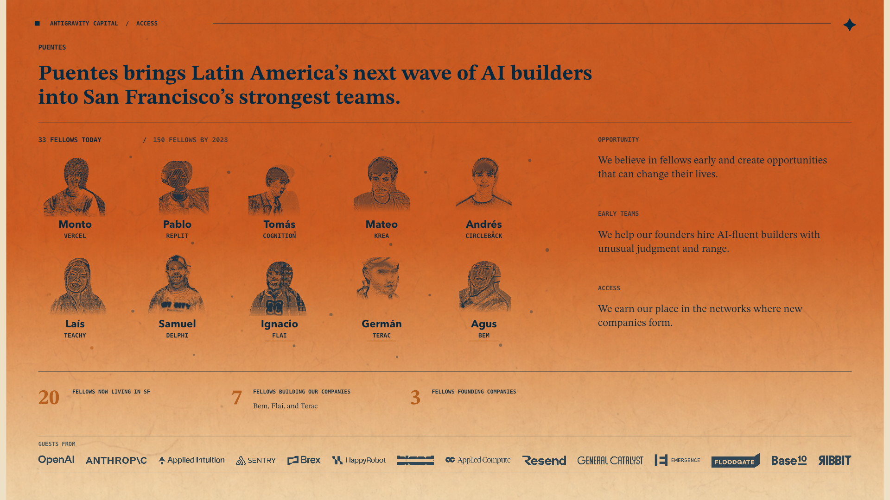
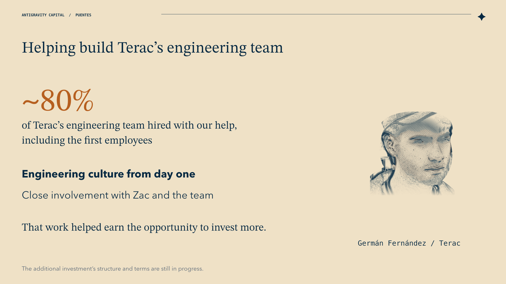
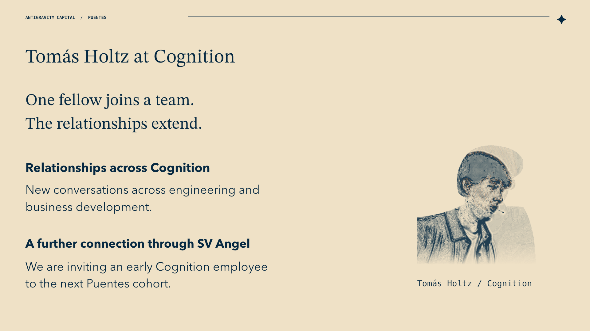
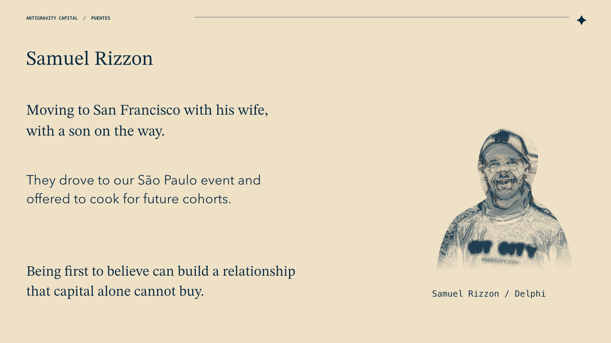
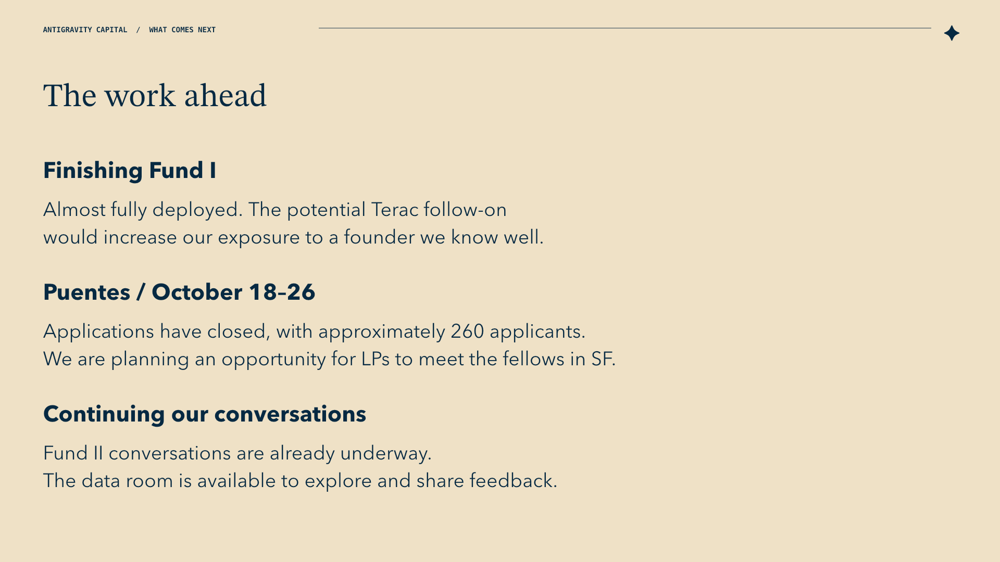
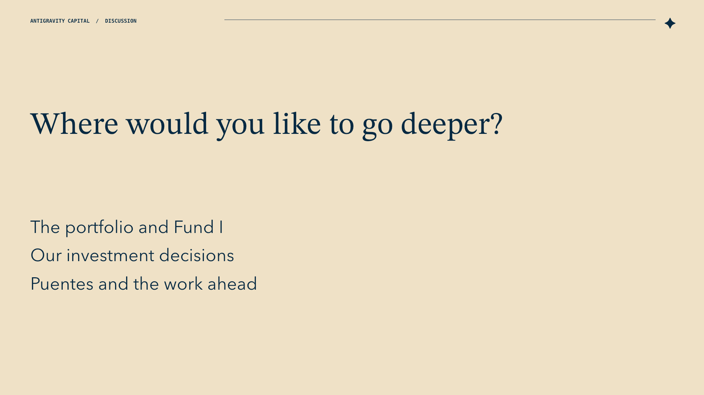

Spotlight outline & slides
The shared outline after our September 11 conversation, with Gadi’s latest story notes. Review the sequence and main points together, then decide who takes each part.
The capital, TVPI and DPI figures are still placeholders. All nine slides have speaking notes in the editable deck.
Purpose and tone
Eighteen months after closing Fund I, we can show the companies their capital helped build, explain what gives us confidence and what remains uncertain, and make our investment judgment more visible. The opportunity in AI has developed quickly. Working with these founders has made our understanding of it more specific, and our own role clearer.
The session should feel like spending an hour inside the work of Antigravity. Lead with confidence, curiosity and candor. Use numbers to give the conversation substance, and company stories to explain what the numbers mean.
Internal purpose: Make the next conversations with existing LPs about Fund II natural. Gadi reported that approximately 30–40% of Fund I LPs had already committed some amount. This describes the share of LPs, not the share of Fund II raised; it does not need to be an opening statistic.
| Time | Part | Main point |
|---|---|---|
| 0–6 min | Where Antigravity stands | Here is the firm and portfolio we have built, and where Fund I is today. |
| 6–20 min | The opportunity, through our companies | AI is changing what software can do. Terac also introduces the significance of helping build a team. |
| 20–28 min | How we earn a place and make investment decisions | The Ari, Applied and Origami histories show how contribution and firsthand knowledge lead to investments. |
| 28–37 min | Puentes: why we do it and what it makes possible | Introduce the program formally, then use Terac, Tomás and Samuel to show its role in our strategy. |
| 37–40 min | The work ahead | Finish Fund I deployment, bring the next Puentes cohort to SF, and continue the conversations already underway. |
| 40–60 min | Discussion | Follow the subjects LPs want to explore, with current facts ready across the portfolio. |
Working allocation, not an agreed run of show. The company map is a menu for a live conversation. Give the Puentes introduction and its two or three stories enough room. Access and Puentes stay adjacent, with Origami's first-hire story connecting them.
Where Antigravity stands
{kind=link}

Main points and speaking notes
Main point: We have spent the last 18 months building this portfolio and developing as investors. This is an opportunity to share where we are and what we have learned.
- Begin with why we are holding our own spotlight. The founder sessions have created a candid relationship with LPs; it feels right to give them the same access to our work. Kim suggested this months ago.
- Briefly place the firm in time: what Gadi and Daniel brought to the partnership, what the world looked like when we started, and what we are becoming better at through investing together. Keep the personal account short and specific.
- Fund I is almost fully deployed. Give LPs a clear view of invested capital, portfolio size, remaining investable capital, and realized and unrealized progress.
- Use Shopgenie to make realized proceeds tangible. Distinguish money distributed to LPs from proceeds retained or recycled, and both from paper value.
- Build the opening around the following “Antigravity Fund I in numbers” draft.
Material: One or two simple slides. Use selected SOI figures, with an as-of date. The detailed SOI stays available in the data room.
Antigravity Fund I in numbers
- 18 months since our $2.1M Fund I's final close
- $XX capital invested
- $XX capital left to deploy
- 21 companies backed
- $90M+ raised by eight portfolio companies since we first invested
- XX TVPI · XX DPI
- Three Puentes cohorts · 33 fellows · 20 living in SF
- 11 portfolio hires we helped make
- Two new investments since our last LP letter: Place Labs and Intelligent Machines
These are Gadi's selected opening figures. The capital and performance placeholders remain open until the SOI is reconciled. Keep the eight-company financing tally behind the $90M+ figure available in the supporting notes, and date the snapshot.
Measurement note: The 11 portfolio hires is the broader Antigravity hiring contribution. The previous Puentes slide counted seven fellows working at portfolio companies. These measure different things; keep their definitions separate.
Transition: What has changed in the world since we began, and what do the companies we own help us understand about it?
The opportunity, through our companies
{kind=link}

Main points and speaking notes
Main point: Our original conviction about AI has become more concrete. We can now show both the capabilities becoming possible and businesses putting them to work.
The change we want to explain
- When we started, AI was an exciting area attracting strong technical founders. Its commercial shape was much less clear.
- The development has been faster and more fundamental than we fully appreciated. Better models and the tools around them are making agents usable in production and valuable to customers.
- Our organizing ideas are the new stack and the new company. The first supplies the infrastructure that makes AI reliable and useful; the second uses those capabilities to perform work and build a business around it. The two reinforce each other.
- Explain this through the companies. For each example, connect the change in the market, what the team is doing, the evidence of progress, and what we are still watching.
Material: Adapt the existing opportunity and strategy slides. A simple company map can carry the discussion. Reusing the slides does not require delivering the Fund II pitch around them.
The six-company map
Create a simpler version of the strategy slide with six distinct company areas. Under the new stack: Halluminate, Veria Labs and Bem. Under the new company: Pace, Flai and Terac. Keep each company's main points visible and separate so we can follow whichever story makes sense in the conversation. The map does not impose a six-company speaking sequence.
Halluminate
Point: The labs' demand for training data and environments is creating large, fast-moving businesses.
- Strong delivery for Anthropic has driven rapid growth. A major customer relationship and a competitive, volatile market are both part of the picture.
- Closed a $30M Series A at $200M post-money. We organized approximately $1M of additional exposure through a separate SPV, with nearly ten LPs choosing to participate.
- That participation taught us that some LPs want more opportunities to invest in portfolio companies they believe in.
Veria Labs
Point: Deep technical judgment matters when the problem is clear but the winning product is still taking shape.
- We backed people who had spent years competing together in Capture the Flag competitions and understood hacking intimately.
- The open question was whether their technical ability would translate into winning demanding commercial procurement processes.
- Wins with PostHog and Ramp and approximately $1.5M ARR are encouraging evidence from Gadi's current notes. Explain what we have learned so far while keeping the eventual investment outcome open.
Bem
Point: Increasing responsibility inside existing customers is meaningful evidence of product value.
- Some customer relationships expanded from much smaller contracts to $250K–$500K ACV.
- Building the top of the funnel and adding customers quickly enough has been harder. The new capital gives the team capacity to work on that challenge.
- Gadi's last figures were $1.3M–$1.4M ARR and a $10M Series A at a $50M valuation. The valuation's pre/post basis remains to confirm.
Pace
Point: Institutional distribution and different customer settings show the business Pace is becoming.
- GED/Pearson, Miami-Dade adult education and electrician training/IEC chapters make its uses concrete.
- Its quieter progress and our larger early position offer another perspective on the portfolio.
- Approximately $2.1M reported revenue, with period and definition to confirm when Daniel meets Victoria on Tuesday. Daniel has the deepest current context.
Flai
Point: AI software is taking responsibility for more of a dealership's operations.
- Explain the expanding scope across customer communications, scheduling and follow-up.
- Gadi reports $6M ARR and a closed $27M Series A at $150M post-money.
- Briefly introduce the history with Ari. The next section can explain how that relationship developed without repeating the business update.
Terac
Point: Terac is building access to human expertise as the role of human work changes. Our contribution to its team also shows how Antigravity's strategy is taking shape.
- Consumer research and AI training make the business tangible. Gadi's last discussion with Zac put it around $20M annualized revenue, with a stated intention to reach about $50M annual revenue before a Series A.
- We helped build the engineering team from its first employees and worked closely with Zac on engineering culture from day one. Gadi estimates that the Puentes/team-building work accounts for approximately 80% of the engineering team.
- That depth of involvement helped earn the opportunity to invest more. Introduce the connection here, with Puentes explained fully later.
Keep the Terac investment decision inside its story
- We invested what we could in the seed round and wanted a more meaningful position from the beginning.
- Working with Zac from the first engineering hires, helping shape the team's culture and supporting Latin American expansion has strengthened our conviction in how he operates. The relationship grew through consequential involvement in the business.
- According to Gadi's account, Zac has advocated with larger investors for Antigravity to have a better position because of the work we have done.
- We are considering using the remaining Fund I investable capital to increase that exposure. The opportunity shows how useful work can help improve an initially small position.
- Explain the decision and reasoning at their actual stage on Wednesday. The structure, amount and terms are still being worked through; the additional investment is not yet completed.
Transition: Terac shows what helping a founder build the company can make possible. The next stories explain how these relationships begin, what gives us conviction, and why founders choose to include us.
How we earn a place
{kind=link}

Main points and speaking notes
Main point: We develop conviction through seeing people operate, and earn participation through work that matters to them. The importance of first hires is central to what we learned.
Material: A much simpler Access slide with three stories: Ari / Flai, the Applied network, and Origami / Bluejay. Keep Origami last because it leads directly into Puentes. The Applied story includes Place Labs and Intelligent Machines as founder bets. The pricing comparison is removed from the prepared discussion.
Ari / HappyRobot / Flai
- We helped Ari join HappyRobot as its second engineer.
- When he and his brother started Flai, we helped them get into YC, invested in the YC round, and later helped build the team.
- The relationship continued as Ari's role and priorities changed. Concrete work across those stages gave us a reason to know him well and gave him a reason to want us involved.
The Applied network: knowing how people operate
Point: These investments grew out of years around people doing difficult, consequential work at Applied Intuition. Their seriousness, understanding of the current moment and ability to execute gave us conviction before the fundraising process.
The histories below are the supporting detail behind a concise slide. We knew Pedro, Justin and Daniel particularly well. Gadi knew Yousef less well, so preserve that difference.
Place Labs — Pedro and Justin
- Pedro and Justin were key engineers at Applied and best friends. We saw complementary partners with a high level of seriousness about building a company.
- Pedro led data infrastructure as Applied shifted toward transformer-based models and training models in-house, creating a need for roughly 1,000 times the data scale.
- Justin was the first engineer on the defense team and helped build it from the beginning to approximately 50 people before leaving.
- These were concrete reasons to believe in what they could build together. Our interest in investing followed from knowing their work and judgment.
Intelligent Machines — Daniel Jabbour and Yousef
- Daniel was an early Applied engineer. He began as an individual contributor, closed commercial contracts, became Qasar's right hand and chief of staff, and ultimately led new markets as general manager.
- By the time he left, he had closed some of the company's largest contracts. His range across engineering, commercial work and operating responsibility is what makes him exceptional in our view.
- We helped him expand Applied into Brazil and later introduced Intelligent Machines' first customer. Gadi describes Yousef as having exceptionally high standards, and the financing attracted intense competition.
- Daniel is also a Fund I LP and is expected to be in the room. His investment in our fund had little bearing on our decision to invest in his company. Our conviction came from knowing his work and judgment. We earned the opportunity to participate by introducing their first customer.
- We wanted to invest well before the round and encouraged Daniel to establish the bank account and accept financing earlier. They chose to run one process, and we participated then. This illustrates the strength of our conviction and how we earned participation; there is no need for a detour defending the price.
Optional participation: Gadi may invite Daniel Jabbour to add a brief firsthand reflection on the relationship or first-customer work. Decide this before the session so it fits the flow. This would be a short contribution from an LP already attending.
Origami / Luke / Bluejay: the experience that helped lead to Puentes
- We introduced Luke to Finn as Origami's first hire.
- Luke then introduced us to his close college friend Faraz, Bluejay's CTO. This is a concrete example of one working relationship opening another.
- The Origami experience also changed Gadi's understanding of the importance of helping a founder build a team. A first hire shapes the company early and can create a depth of involvement with the founder that is difficult to establish otherwise.
- Working with Finn in this way made Gadi want a repeatable format for doing more of that work. He spent the following months looking for how it could make sense.
- The first Puentes happened months later. Origami was an important experience behind the search for that format; Puentes developed as a way to create more of these opportunities.
Transition into Puentes: Helping Finn make that first hire showed us how consequential this work could be. We wanted to find a way to do more of it. Puentes is the format we began building, and this is the first time we are properly explaining it to our whole LP base.
Puentes: why we do it
{kind=link}

Main points and speaking notes
Main point: Puentes creates important opportunities for people we believe in early. Those opportunities help companies build their teams, develop relationships in new places, and create lasting personal ties. This is a deliberate part of Antigravity's strategy.
We have not formally introduced Puentes to the full LP base before. Explain the program itself before assuming people understand why it belongs in this conversation.
The program, its usefulness and its results
- Puentes brings promising Latin American AI builders to San Francisco, creates opportunities to spend time with strong teams and people, and helps them find the next step in their working lives.
- Early companies need builders with fluency in AI, judgment and range. Finding an important early teammate is a concrete contribution we can make to a founder.
- For the fellow, a new team and environment can change their ambitions, collaborators and opportunities. Our relationship begins while those possibilities are still taking shape.
- We have now run three cohorts with 33 fellows; 20 are living in SF. Across Antigravity's work, we have helped make 11 portfolio hires. Keep the broader hiring total distinct from the program's fellow count.
- Show the breadth with the existing Puentes material, then give two or three stories enough detail to explain different parts of the strategy.
Terac: immediate impact on a company we own
{kind=link}

What this story adds: The effect of helping a founder build an engineering team and culture from the beginning.
- Build on the earlier Terac discussion. Puentes and our hiring work have been closely involved with the first employees and, according to Gadi's current estimate, approximately 80% of the engineering team.
- That work brought us into an unusually close relationship with Zac and the development of the company's engineering culture.
- It helped earn the opportunity to improve our investment position. The additional check remains in progress; the contribution and relationship are already real.
- This is the most immediate connection between Puentes, helping our portfolio and developing a more meaningful role as an investor. Keep it brief enough to avoid replaying the earlier company and follow-on discussion.
Tomás Holtz: relationships inside Cognition and beyond
{kind=link}

What this story adds: One fellow joining a strong team can create relationships well beyond that individual.
- Tomás's role at Cognition has already helped activate a number of relationships there. Explain the specific introductions and conversations that followed.
- People and roles Gadi wants to cover: Daniella, Jaime, an FDE in Chile, Bryan, head of BD. The speaking notes should identify the actual connection to each and clarify the names/roles before turning this list into a diagram.
- There is a further connection through SV Angel: an early Cognition employee whom we are now inviting to the next Puentes cohort.
- Cognition's existing experience hiring fellows helps make that invitation credible. This is an invitation underway, not a confirmed participant.
- The story shows how helping a fellow join a team can give us more relationships with the people doing important work around them.
Samuel Rizzon: the personal relationship that follows a life-changing opportunity
{kind=link}

What this story adds: Being the first to believe in someone can create a lasting relationship that capital alone cannot buy.
- Tell Samuel's story through the change in his life: moving to San Francisco with his wife and preparing to have a son.
- They have said they want to cook for every future Puentes cohort.
- When Gadi held a Puentes event in São Paulo, they drove from a small city to be there.
- These are personal expressions of how much the relationship means to them. Their wish to contribute back makes the long-term significance of this work tangible.
- Gadi's point is that this kind of loyalty is earned through believing in people early and helping change what is possible for them. The relationship can last well beyond a cohort or an individual job.
How to use the three stories: Terac shows company impact and an opportunity for greater ownership; Tomás shows how relationships extend; Samuel shows personal impact and the desire to give back. Prepare all three and decide in rehearsal how much time each needs. The Terac callback can be short because the business and investment reasoning have already been introduced.
Material: The Puentes overview and supporting portraits/company references already exist. The spoken detail should explain what happened to the person and why it matters. A future-fellow target or an exhaustive guest-logo tour is optional supporting context.
Transition: The next cohort is an opportunity for LPs to see this work and meet the people themselves.
The work ahead
{kind=link}

Main points and speaking notes
Main point: We are continuing the work LPs have just seen, and there are straightforward ways for them to stay involved.
- Briefly recap that Fund I is nearing the end of deployment. The reasoning behind the possible Terac investment has already been covered.
- The next Puentes cohort is October 18–26. Applications have closed; Gadi reported approximately 260 applicants in the September 11 conversation. This is an application count, separate from the existing fellow counts.
- We are planning an opportunity for LPs to meet the fellows and see the week in person. Announce only the date and format actually settled by Wednesday.
- Acknowledge the Fund II conversations already underway and the support LPs have shown. Share the data-room link and invite people to explore the materials and offer feedback.
- Move into questions. Fund II's size, check size and ownership targets stay available for people who ask; they do not need a dedicated closing slide.
Discussion and questions
{kind=link}

Main points and speaking notes
Prepare a one- or two-sentence current view on every company, including small investments that have struggled. Both partners should be able to address the company status, the original reason for investing and what changed.
Keep supporting detail ready on fund performance, realized versus unrealized value, the remaining capital, company progress, pricing decisions, access, Puentes and Fund II. Daniel has the Tuesday conversation with Victoria to update Pace. Final speaking roles come after the sequence is settled.
The return simulator is removed from the spotlight. Its files remain internal preparation, and the earlier 5x exercise is not a forecast or a promised outcome.
Supporting company facts
Figures, definitions and preparation notes
These are the facts already gathered for preparation, not six additional presentation segments. Operating figures are Gadi's September 11 working inputs unless the linked research identifies a dated source. Refresh only what we choose to use and keep revenue definitions intact.
| Company | Evidence and judgment available |
|---|---|
| Halluminate | $30m Series A at $200m post-money. Strong delivery for Anthropic, its largest customer, has driven rapid growth; customer concentration and a volatile, competitive market remain relevant. Antigravity organized an approximately $1m separate SPV with nearly ten LPs participating/interested. This shows appetite for additional portfolio exposure; confirm the SPV's final closing before calling it funded. |
| Veria Labs | Longstanding Capture the Flag team; trust in its understanding of hacking and product judgment. Gadi reports competitive wins with PostHog and Ramp and approximately $1.5m ARR reached quickly since December. The commercial progress is encouraging evidence; the long-term investment outcome is still open. Confirm the date of the revenue figure used. |
| Flai | Gadi reports $6m ARR and a closed $27m Series A at $150m post-money. Taking on more dealership work across communications, scheduling and follow-up. The product's expanding responsibility makes the new-company idea tangible. |
| Terac | Approximately $20m annualized revenue at Gadi's last discussion with Zac. Zac's stated intention was to reach approximately $50m annual revenue before a Series A; that is a future threshold. Consumer research and AI training are concrete examples. Personal-assistant use cases are exploratory conversations. |
| Bem | Gadi reports a $10m Series A at a $50m valuation; pre/post basis remains unspecified. Approximately $1.3m–$1.4m ARR when last checked. Some customer relationships have expanded to $250k–$500k ACV; acquiring new customers quickly enough remains the challenge. New capital creates capacity to work on that challenge. |
| Pace | Approximately $2.1m reported revenue; definition and period still to confirm with Victoria. GED/Pearson, Miami-Dade adult education and electrician training/IEC chapters show different institutional uses. Daniel is the current context holder; final presentation assignment remains open. |
Company evidence and wording checks
SOI reconciliation already prepared
Halluminate: 23,825 Fund I A-7 shares at $12.0408 indicate $286,872.06, or 3.825x cost. Flai: 23,614 A-2 shares at $10.5604 indicate $249,373.29, or 3.325x cost. These are financing-price indications, not cash distributions or fund TVPI. Intelligent Machines closed September 3 with a documented investment cost of $149,997.18.
The Halluminate SPV is separate from Fund I. Aggregate fund figures and remaining investable capital still need reconciliation; the live SOI has not yet been updated.
Decisions for the next pass
| Work | Concrete result needed |
|---|---|
| Opening snapshot | Fill the $XX invested, $XX left to deploy, TVPI and DPI placeholders from the reconciled SOI. Keep the eight-company financing tally and definition of the 11 hires in the supporting notes. Halluminate and Flai share-conversion work is already done. |
| Company map and Access | Keep all six companies separate on the map. Simplify Access to Ari, the Applied founder stories and Origami/Bluejay. Rehearse the direct Origami-to-Puentes transition. |
| Puentes stories | Prepare Terac, Tomás and Samuel. Complete the specific Cognition connection paths and people/roles. Decide how much of each story to tell and whether to invite Daniel Jabbour to speak briefly during Access. |
| Last factual refresh | Date the operating figures used, update Pace after Tuesday, confirm Terac's engineering-team count and follow-on status, settle the LP-day invitation, and confirm Halluminate SPV closing language. |
| Flow and speaking | Refine these main points together on Monday/Tuesday, settle transitions and the time available for questions, then assign speakers and build simple slides. |
The creative work is now making the connections precise: Terac's team-building contribution, the Applied founder histories, Origami's role in the search for a repeatable format, and the three Puentes stories. The financial work is filling the four opening placeholders. Company preparation can remain concise notes; a full script for each business is unnecessary.
Earlier notes saved in this browser
References
- Shared working page: the outline, slide previews, presentation view and downloads for the discussion with Daniel.
- Editable nine-slide working deck: Fund I in numbers, company map, Access, the original Puentes overview, three Puentes stories, the work ahead and discussion. Detailed company and founder notes remain in the outline and deck notes. Financial placeholders remain open for reconciliation.
- September 11 conversation: governs the presentation direction.
- Fund I SOI and reconciliation completed September 11: Halluminate indicated financing-price mark 3.825x and Flai 3.325x, based on conversion shares; these are paper position marks, not fund TVPI or cash distributions. Intelligent Machines is a confirmed investment; Sift is now Place Labs. The reconciled changes have not yet been applied to the live SOI.
- Access material and Puentes material: use the established stories and exact relationship histories within this new sequence.
- Fund II, if asked: $10m, approximately 25 investments, at least 1% initial ownership targeted in each position. The larger checks are intended to produce higher ownership with only a modest increase in portfolio size.